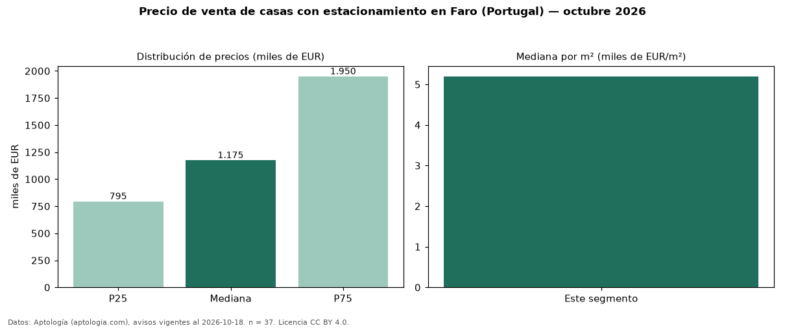

Precio de venta de casas con estacionamiento en Faro (Portugal) — octubre 2026
EUR 1,18 millones es el precio mediano de casas con estacionamiento en venta en Faro (Portugal) (n = 37 avisos). Frente a la mediana de todas las casas en venta de Faro (EUR 972.500, n = 44), queda 21 % por encima; este segmento reúne el 84 % de esos avisos. Por metro cuadrado, la mediana es EUR 5.196/m² (n = 30), 7 % por encima del conjunto de referencia (EUR 4.841/m²). El área mediana anunciada es 184 m². La mitad central de los avisos va de EUR 795.000 a EUR 1,95 millones (razón 2,5), una dispersión alta. El segmento con más oferta es el de 3 o más habitaciones (34 avisos, mediana EUR 1,26 millones). Datos: Aptología (aptologia.com), CC BY 4.0 — https://www.aptologia.com/pt/venda/faro. Archivos: PDF, CSV con las cifras y gráfica PNG.

| Avisos únicos | 37 |
|---|---|
| Percentil 25 | COP 795.000 |
| Mediana | COP 1.175.000 |
| Percentil 75 | COP 1.950.000 |
| Mediana por m² | COP 5.196 |
Fuente: avisos vigentes de portales inmobiliarios recopilados por Aptología, deduplicados (mínimo 30 avisos únicos por celda). Precios pedidos, no cerrados. Fecha: 2026-10-18.